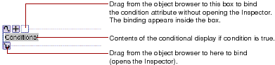

Table of Contents
Table of Contents  Next Section
Table of Contents
Next Section
Table of Contents  Previous Section
Previous Section
condition must be bound to a variable or a method that returns a boolean value. (WebScript and Objective-C use the constants YES and NO; Java uses true and false.) To bind condition (or any other attribute that takes a boolean) to a constant value, enter YES or NO in the bindings Inspector.
To create a conditional, click in the toolbar.
Note: Any selected elements will be contained within the conditional.

To bind to a conditional, click a variable or method and drag to one of the conditional's outer icons. The Inspector appears, displaying the bindings for the WOConditional, with the condition attribute selected by default. Complete the binding by clicking Connect, or choose a different attribute to bind.
There is a shortcut for binding the condition attribute similar to the WOString shortcut. Drag from a key in the object browser to the binding box in the conditional.
Sometimes, you want the equivalent of an "if-then-else" structure; that is, "if the condition is true, display this text; if not, display this other text." To accomplish this, you can use the negate attribute. If negate is true, then the contents of the conditional are displayed only if condition is false. To create an if-then-else structure, do the following:
By default, negate is false, so you do not explicitly need to bind the first conditional's negate attribute.
Table of Contents Next Section